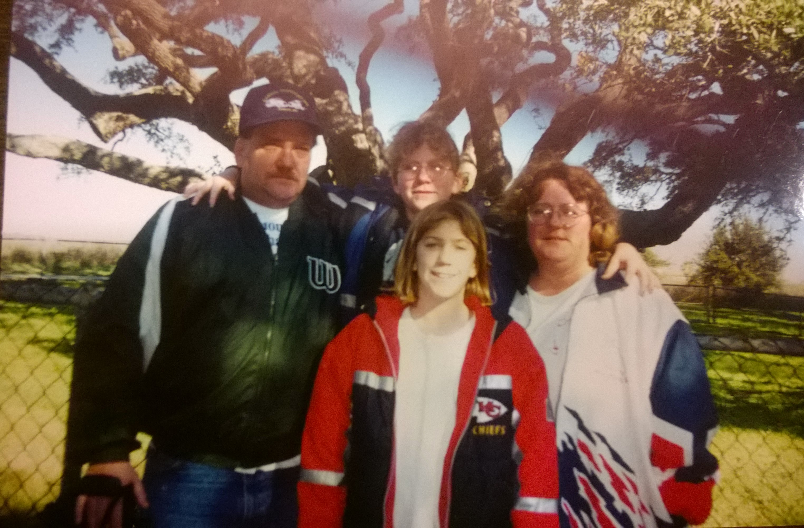

It was 2010 i was living in Panama City Beach FL. I was going through a breakup which at the time seemed like a real big deal. I had been struggling to escape the depresses state that held my attention most days. I found some freedom by going out and dating as much as i could. I was asking everyone who seemed available. I was even taking out girls that i knew i had a poor chance with happiness. It was a great distraction and it helped me open my eyes to just how important, or unimportant that realationship really was. It was during this time that I stumbled across a simple comment by a woman more than a thousand miles away.
I didn't have a home interenet connection in those days but lucky for me a convience store less than a mile away had an old computer set up in the corner offering 15 minutes of interenet access for $1.50. The kicker was there was no keyboard. Some joker spilled hi cola on it and the owner held the golden rule of the people dealing with the consiquences of the few dolts. I simply brought my own keyboard. So there I was. gliding down the street with a big old greay keyboard jutting out of my backpack. During one of my convienence computer occasions in which i would tidy up all the ends of my burgeoning social media needs. There she was. A friend of a friend of a friend. But I saw her comment on that of anothers. Her face stopped me at first. She was absolutely beautiful. Every image of perection i had ever conjured up as a male about a woman was right before me. Then i read her comment. I was a simple praise of the band Tool. For those of you who do not explain the importance of this, let me explain.
Tool is not the kind of band your average beautiful enjoys. Or even knows of. Hell, i know alot of pretty cool guys who dont listen to tool. Or even kow who the hell they are. But i do. I know who they are. I love them. And so does this amazingly gorgeous woman.